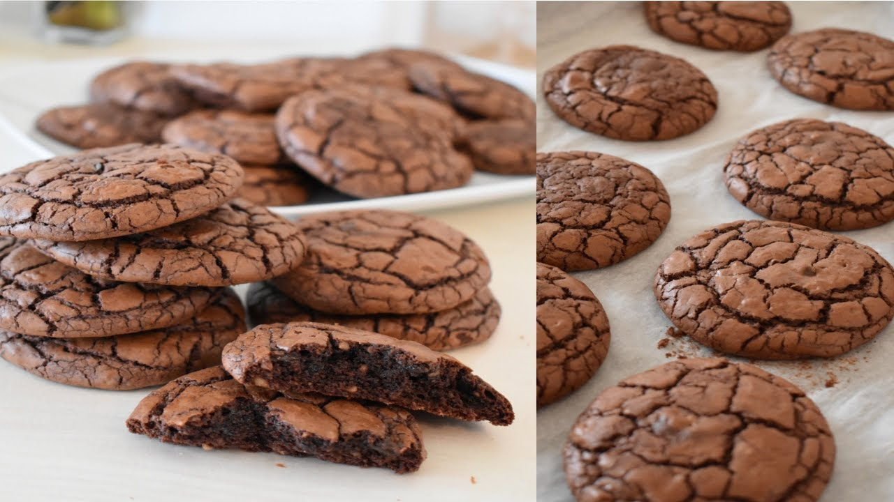
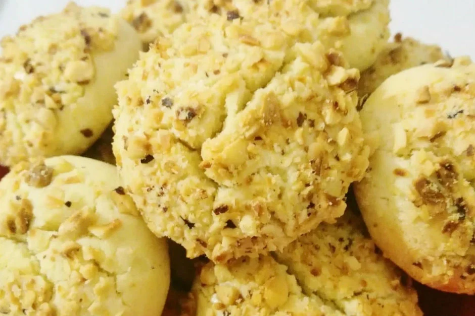
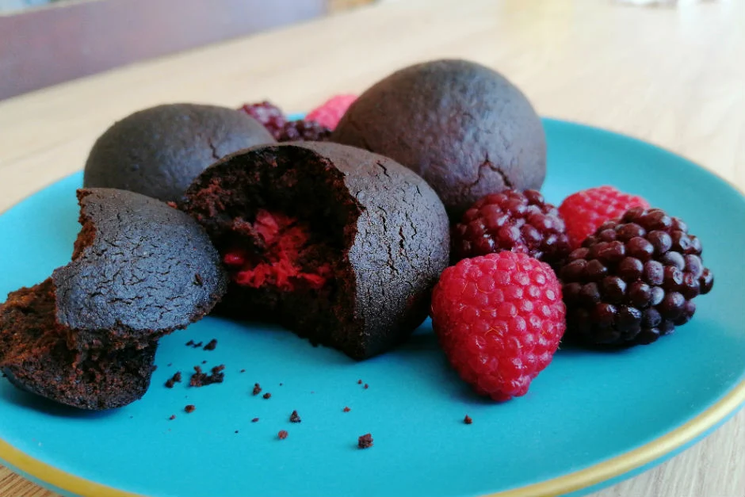

Kurabiyeler
Browni Tadında Çatlak Kurabiye
Bugüne kadar pişirdiğim ve yediğim en lezzetli kurabiyedir kendisi. (Tabi tahinli kurabiyeyi unutmayalım) Browni severlerin bayılacağı bir tarif geliyor, browni tadında çikolatalı kurabiye...

Tahinli Fındıklı Kurabiye
Tahin severler için çok güzel bir tarif paylaşacağım. Tahinli Fındıklı Kurabiye... Tabi her tarifte olduğu gibi bu tarifte de püf noktalar var. Öncelikle...

Meyveli Kurabiye
Kurabiye için çok güzel bir tarif paylaşacağım. Meyveli kurabiye... Kurabiyenin iç kreması kreması çok lezzetli oluyor. Tabi her tarifte olduğu gibi bu tarifte de püf noktalar var. Bunlardan ilk...
